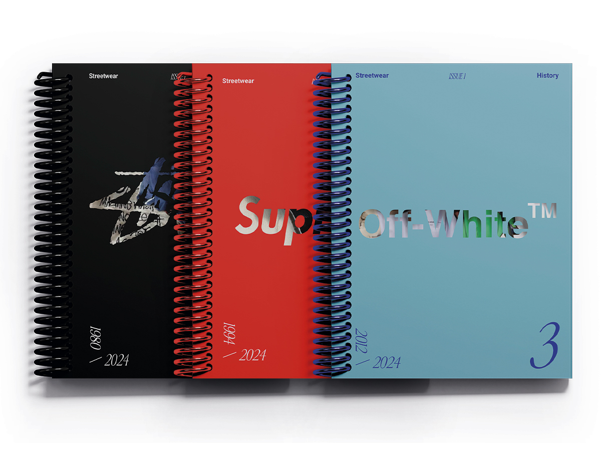
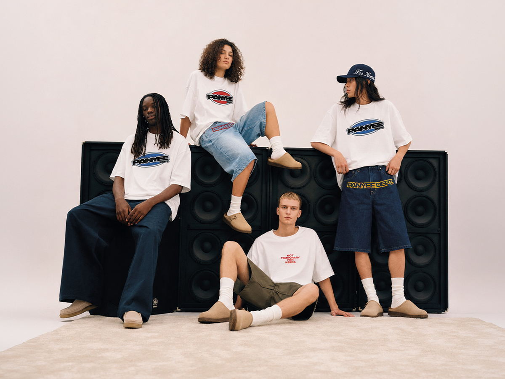
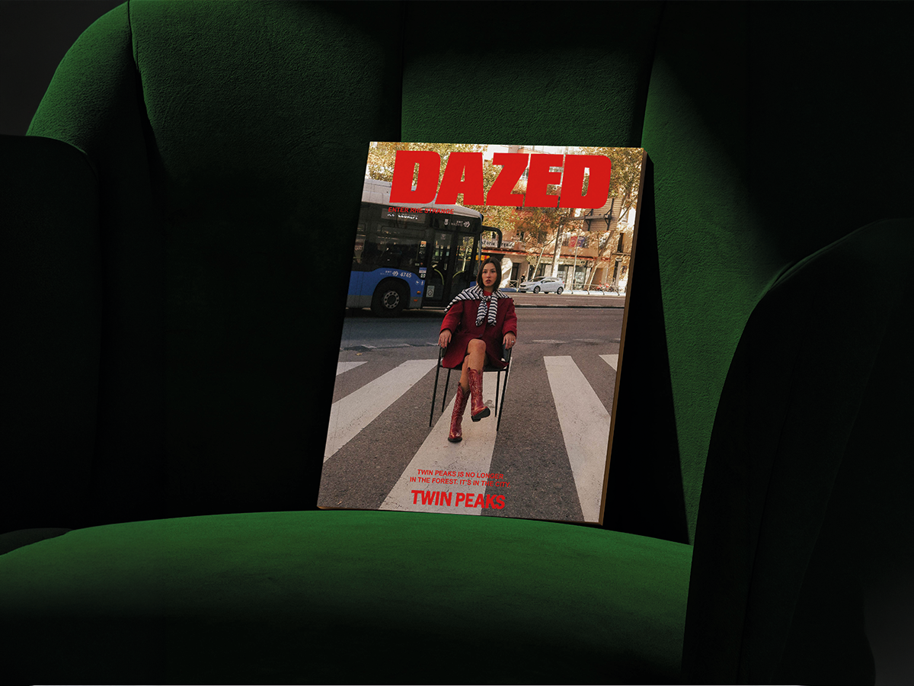
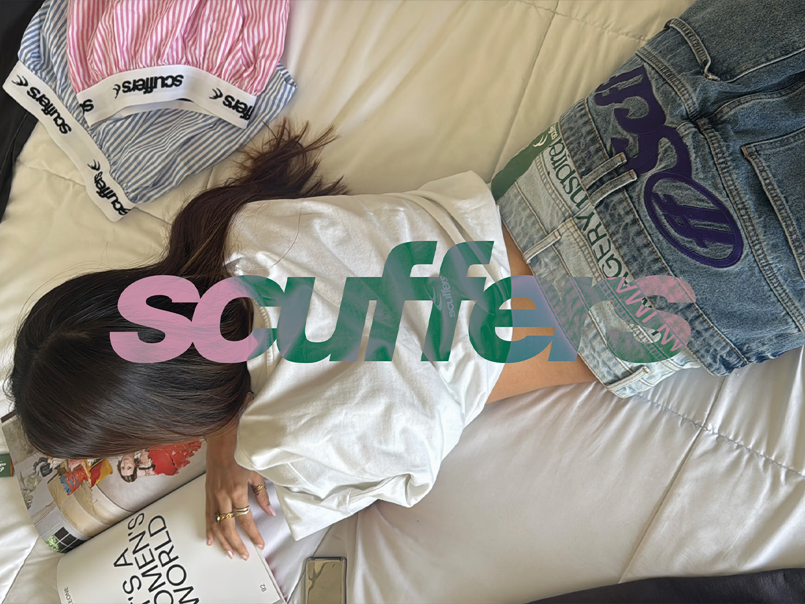
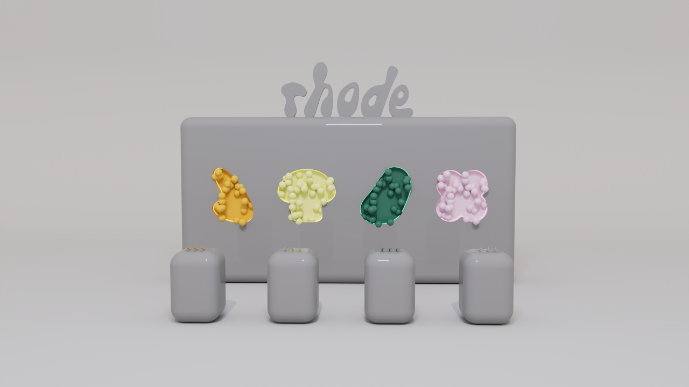

Bosco Oria · Madrid
ORIA
STUDIO
Graphic Design · Styling
Creative Direction · Image
Drag the images






Bosco Oria · Madrid
Graphic Design · Styling
Creative Direction · Image
Drag the images




